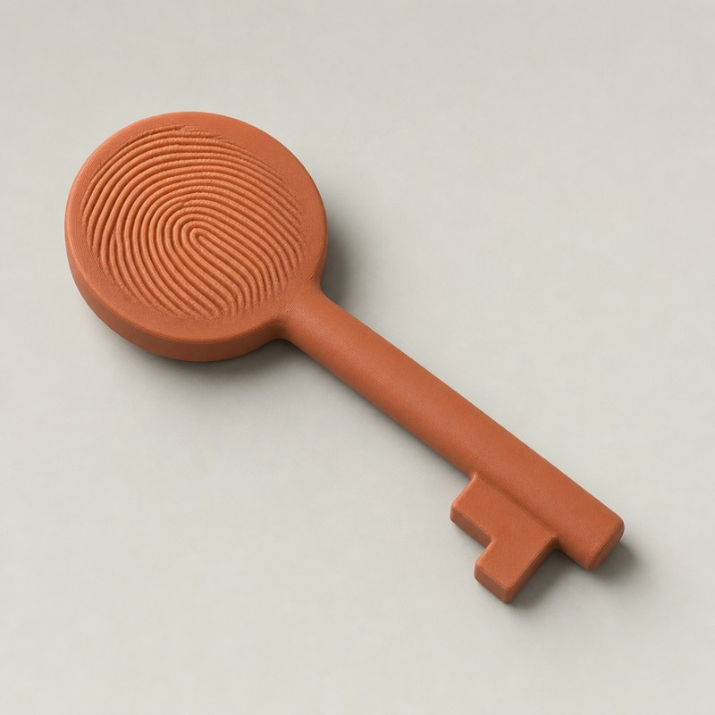
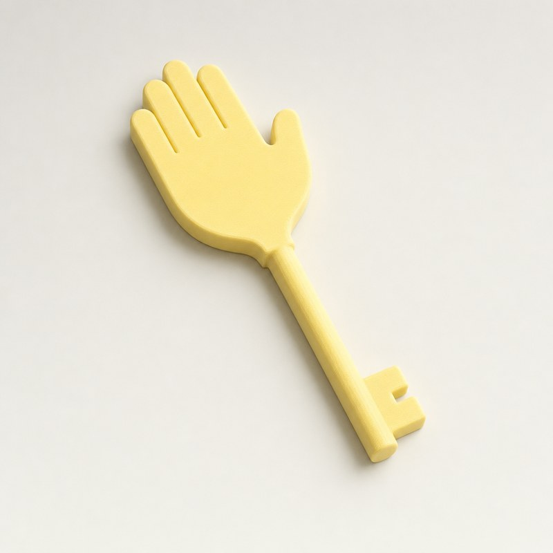
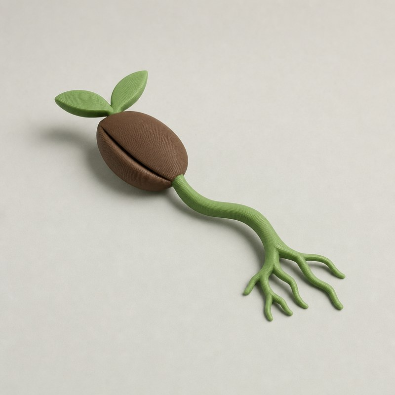
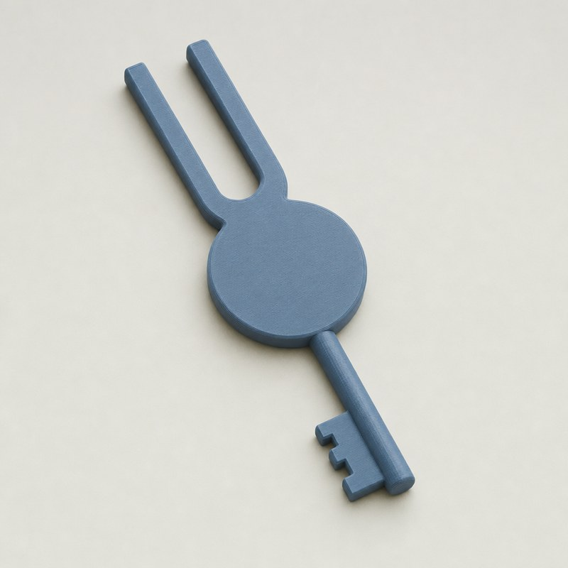
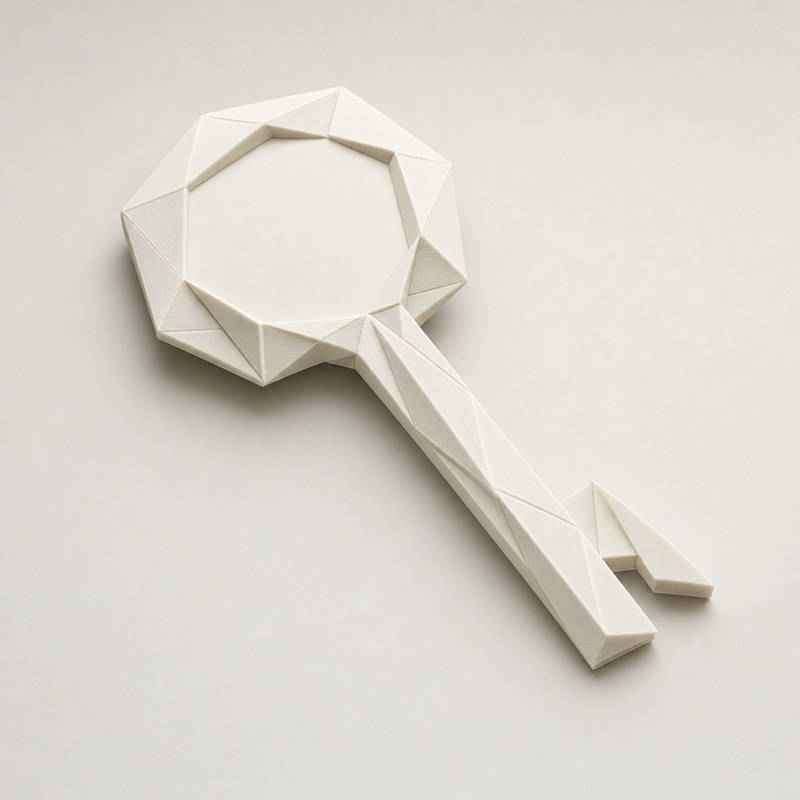
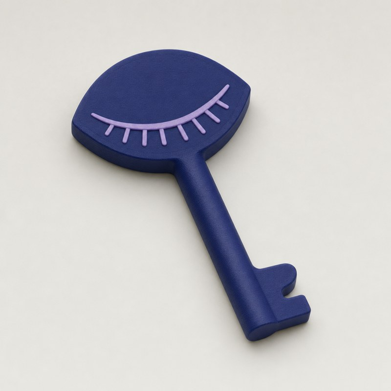
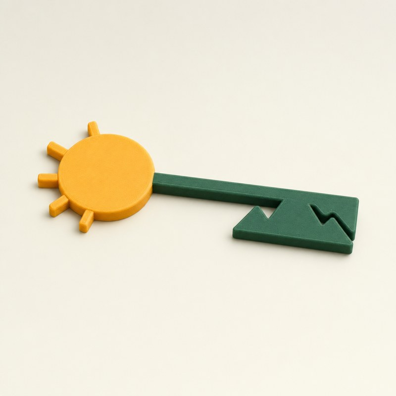
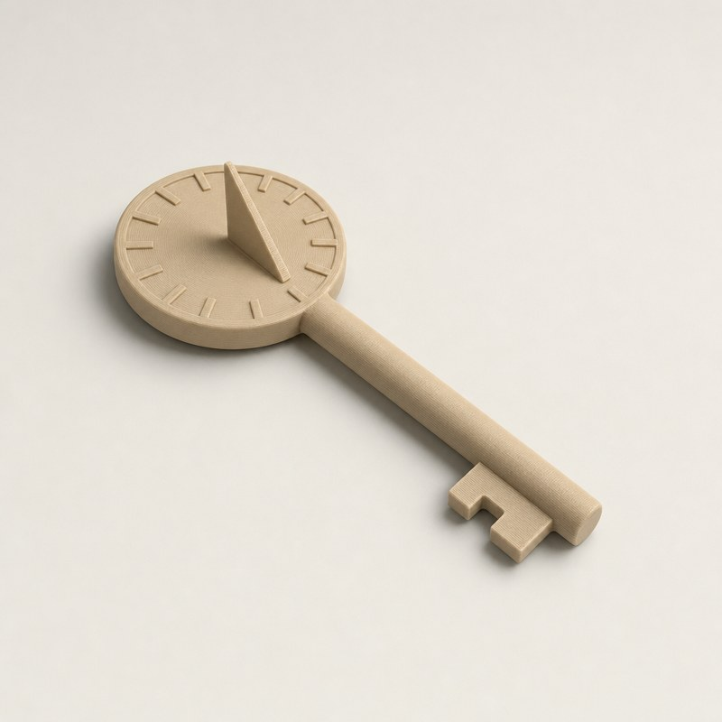

A standalone object, not a keychain: "key" is only its outline. Each shape keeps a bow, shaft and bit, but gives the key a theme tied to its job, which is putting the phone down. Snowflakes and ornate fantasy keys were left out on purpose.

Fingerprint swirl on a round bow. Doomscrolling is a thumb habit. The Key carries the thumb, so your thumb is literally the key.
Tap: the fingerprint.

Bow is an open palm in a stop gesture. The hand says stop before the app opens. Tapping it reads as a high five with the phone.
Tap: the palm.

Seed bow, stem shaft, roots for teeth. Time away from the phone grows something. The image lost the key outline; the roots need to read as a bit.
Tap: the seed.

Fork tines rise above a round disc. Tune out the noise. Precise, quiet and instrument-like on a desk.
Tap: the disc.

Folded-paper facets, crisp creases. Unusual as an object, with no clear message. The drawn bow has a hole; the build would fill it as the tap spot.
Tap: the faceted bow.

Bow is a calm closed eye with lashes. Rest your eyes. Two colours; the lid line marks where to tap.
Tap: the eyelid.

Sun bow, horizon shaft, mountain teeth. The teeth are mountains: unlocking means going outside. The image cut the peaks in; the build would raise them.
Tap: the sun.

Sundial face with a gnomon on the bow. Time is the theme. The gnomon stands about 6 mm high, so the phone taps the back face.
Tap: the flat back.